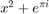

clc; close all; clear all; %input point generation a = input('Enter the coefficient of x^2: '); b = input('Enter the coefficient of x: '); c = input('Enter the constant: '); N = input('Enter the number of points to generate: '); [x, y] = randcurve(a, b, c, N); subplot(3,1,1) stem(x, y, 'LineStyle', 'none', 'Marker', '.'); xlabel('X') ylabel('Y') title('Generated Curve') err = 0; dela = 0; delb = 0; delc = 0; epochs = 1; errfin = zeros(1, 10); %Curve Fitting a1 = 0; b1 = 0; c1 = 0; %normalisation x = x./max(abs(x)); y = y./max(abs(y)); %Training (Gradient Descent) for i = 1:N err = err + (y(i) - (a1*x(i)^2 + b1*x(i) + c1))^2; end err = err/N; errfin(1) = err; while (err > 0.0009
 )
for i = 1:N dela = dela + (-x(i)^2*(y(i) - (a1*x(i)^2 + b1*x(i)+c1))); delb = delb + (-x(i)*(y(i) - (a1*x(i)^2 + b1*x(i)+c1))); delc = delc + -(y(i) - (a1*x(i)^2 + b1*x(i)+c1)); end dela = dela*2/N; delb = delb*2/N; delc = delc*2/N; a1 = a1 - 0.1*dela; b1 = b1 - 0.1*delb; c1 = c1 - 0.1*delc; for i = 1:N err = err + (y(i) - (a1*x(i).^2 + b1*x(i) + c1))^2; end err = err/N; epochs = epochs + 1; errfin(epochs) = err;
end %Output and Display disp('The number of epochs required'); disp(epochs); j = 1:epochs; subplot(3,1,2) plot(j, errfin) xlabel('Epochs') ylabel('Error') title('Error v/s Epochs') disp('The co-efficients are:'); disp('a1 ='); disp(a1); disp('b1 ='); disp(b1); disp('c1 ='); disp(c1) subplot(3,1,3) stem(x, y, 'LineStyle','none','Marker','.'); hold on stem(x, a1*x.^2+b1*x+c1, 'LineStyle', 'none', 'Marker', '.'); xlabel('X') ylabel('Y') title('Generated Curve')
Error using dbstatus
Error: File: D:\College\BE 2nd Sem\SC\Labwork\Mini Project\mainfile.m Line: 40 Column: 20
Expression or statement is incorrect--possibly unbalanced (, {, or [.